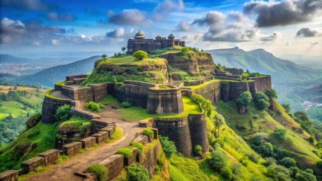
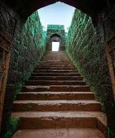

रायगड किल्ला हा महाराष्ट्रातील सर्वात महत्त्वाच्या ऐतिहासिक किल्ल्यांपैकी एक आहे. हा किल्ला रायगड जिल्हा येथे सह्याद्री पर्वतरांगांमध्ये सुमारे २७०० फूट उंचीवर वसलेला आहे. हा किल्ला समुद्रसपाटीपासून उंच असल्यामुळे आजूबाजूचा परिसर स्पष्टपणे दिसतो आणि त्यामुळे तो लष्करी दृष्ट्या खूप मजबूत मानला जात होता. या किल्ल्याचे जुने नाव “रायरी” असे होते.
इ.स. १६५६ मध्ये छत्रपती शिवाजी महाराज यांनी हा किल्ला जिंकून घेतला आणि त्याचे नाव “रायगड” असे ठेवले. त्यानंतर त्यांनी या किल्ल्याचा मोठ्या प्रमाणात विकास करून तो स्वराज्याची राजधानी बनवला.
इ.स. १६७४ मध्ये रायगड किल्ल्यावर छत्रपती शिवाजी महाराजांचा भव्य राज्याभिषेक सोहळा झाला.
रायगड किल्ल्यावर महादरवाजा, राजसभा, नगारखाना, जगदीश्वर मंदिर, हिरकणी बुरुज, टकमक टोक, गंगासागर तलाव आणि छत्रपती शिवाजी महाराजांची समाधी अशी अनेक महत्त्वाची स्थळे आहेत.
रायगड किल्ल्याशी संबंधित हिरकणीची कथा देखील प्रसिद्ध आहे. हिरकणी नावाची गवळीण आपल्या बाळासाठी रात्री किल्ल्याच्या उंच कड्यावरून खाली उतरली होती.
इ.स. १६८० मध्ये रायगड किल्ल्यावरच छत्रपती शिवाजी महाराजांचे निधन झाले. आज रायगड किल्ला हा महाराष्ट्रातील एक महत्त्वाचे पर्यटन स्थळ आहे.